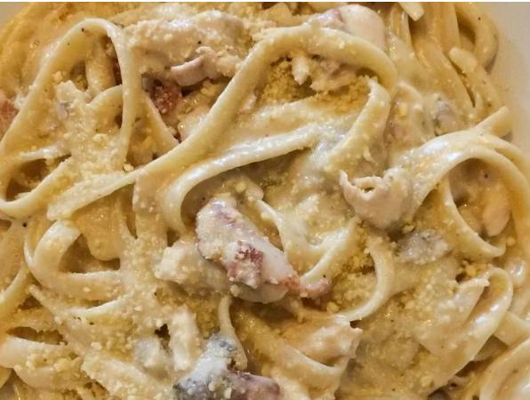

Chicken Fettuccine Alfredo

Description
Chicken, mushroom and pasta in a creamy garlic and cheese sauce
Ingredients
- 8 ounces fettuccini pasta
- 2 tablespoons butter
- 3 skinless, boneless chicken breast halves - cut into chunks
- 8 ounces mushrooms, sliced
- 1 teaspoon garlic salt
- ⅛ teaspoon ground black pepper
- 1 ½ cups heavy cream
- ¼ cup grated Parmesan cheese
Directions
- Bring a large pot of lightly salted water to a boil. Add fettuccine and cook for 8 to 10 minutes or until al dente; drain.
- Meanwhile, heat butter in a large skillet and brown chicken and mushrooms until chicken is cooked through. Season with garlic salt and pepper. Add whipping cream and cook until thick, stirring constantly.
- Add Parmesan cheese when at desired consistency. Serve over noodles.
Back to recipes